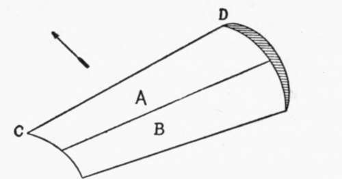
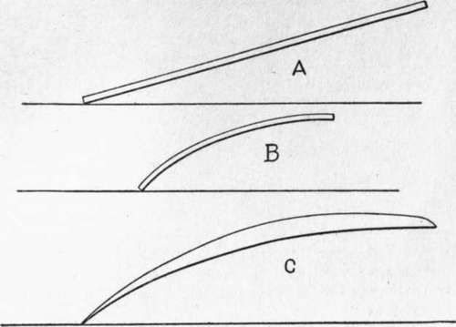
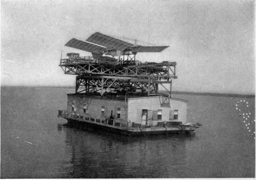

Chapter III. The Plane In The Air
Description
This section is from the book "The New Art Of Flying", by Waldemar Kaempffert. Also available from Amazon: The New Art of Flying.
Chapter III. The Plane In The Air
A rowboat, a mud-scow, a battleship, and a racing yacht, whatever aesthetic differences they may present, are roughly similar in form. The swifter the vessel the finer will be the lines of its hull. Naval architects after some centuries of experimenting have laid down certain rules of construction to be followed in building vessels of a certain class.
The plane surface is to the aeroplane what a hull is to a ship. Like a ship's hull it must Be fashioned to cleave the medium through which it must travel with the least possible resistance. Aeronautical engineers have not solved that problem entirely as yet, for the simple reason that flying has only recently become an assured fact. But their experiments have given them certain standards which they invariably follow when they design an aeroplane. Young as the art of flying is, it may well be questioned whether the aeronautical engineer is not in possession of a set of empirical formulae almost as good as those of the naval architect.
So far as the manner of cleaving their respective media is concerned, there is this important difference between ships and planes: — A vessel is propelled through the water along the line of least resistance, the line of its length; an aeroplane, whether it be a bird or a Wright biplane, is driven through the air at right angles to the line of greatest length or resistance.
What is known as the " entering edge " of an aeroplane, in other words the character of the cutting part of a plane, gives the aeronautical engineer much concern. It is the entering edge that strikes the air first. The lifting-power of a plane gradually dwindles from the entering edge backward. A plane one hundred feet long and one foot wide has greater lifting power than a plane ten feet square, although both planes have exactly the same amount of surface. That explains why the wings of a bird are longer in span than in width, and why the aeroplanes of man are as long and as narrow as possible. If the entire surface of a plane were struck by the air, it would be just as advantageous to employ square planes. But since the air bears directly only on the front or entering edge, we must adopt planes that give us as great an entering edge as possible without making the plane too unwieldy.
Otto Lilienthal demonstrated, after much experiment, that if an oblong surface were curved, the loss in power in the rear half of a plane might be overcome. The investigations of others, notably Horatio Phillips, Prof. S. P. Langley, Sir Hiram Maxim, and the Wright Brothers, have confirmed his opinion. Hence, despite their name, the best aeroplanes of tospite the curvature, however, there is an appreciable loss in lifting power, back of the entering edge.
The general shape which a plane should have must be considered as well as the entering edge. Much experimental research has shown that the best plane is not only curved back and day are made not with flat, but with surfaces slightly curved from front to rear (Fig. 7), so that the rear part of a plane can " grip " the air almost as well as the entering edge. Dedown, but is also convex on top. What is more, it has been found that it should be somewhat thicker nearer the front. Just where the thickest part should lie is still a matter of doubt; but most designers place the thickest part at a distance from the front edge not more than a third of the total width of the plane (Fig. 8).
Fig. 7. CD is the " entering edge." The lifting power of the forward half A of the curved plane is greater than the lifting power of the rear half B, although both are of equal area.
Fig. 8. A is a simple inclined plane; B, a curved plane at the same angle of incidence or inclination; C, the type of curved plane which has thus far given the best results in the air.
A kite must be held at an angle to the wind if it is to fly. So must an aeroplane. Just what that angle should be varies with the circumstances of flight. The flatter the angle (in other words, the more horizontal the position of the aeroplane) the speedier will be the flying-machine. The greater the angle of the plane, the greater will be the resistance offered and the greater will be the power required to drive the plane. Still, this greater angle will enable the flying-machine to rise more quickly in the air, because the lifting power is greater. It is easy to see that the aviator must select such an angle for his planes that his machine will be as speedy as possible, as economical of power as possible, and that it will have as much lifting power as possible. The angle in practical flying-machines varies usually from one in seven to one in twenty. What does that mean? It means that a plane having an angle of one in ten will push the air down at one tenth of the forward velocity and that the plane will rise one foot in ten relatively to the forward movement.
Fig. 10. Langley's device for launching his aerodromes. The machine was mounted on a houseboat, which could be turned in any direction so as to face the wind.
Photograph by Smithsonian Institution.
An aeroplane driven through the air is acted upon by two forces, — its weight and its horizontal momentum. Because it has weight it is always falling. If its horizontal momentum (its speed) is greater than the rate of its fall, it will stay in the air, which means not only that it has not time enough to fall visibly but that it may even ascend. Suppose that a plane travelling at the rate of ten miles an hour has just sufficient horizontal momentum to prevent its falling. If the speed be increased to twenty miles an hour, the plane will not only be prevented from falling, but will actually rise in the air, because of the plane's angle of inclination. Hence to prevent the plane from rising at a speed of twenty miles an hour, the angle must be flattened. Therefore substantially horizontal flight may be maintained by proper adjustment of speed and angle (Fig. 9) one is carried; when the fuel tank is full the angle will be greater than when the tank is empty, and will vary as the fuel is used. Moreover, when the power of the motor increases or decreases, the speed correspondingly increases or decreases and causes the angle of incidence to increase or decrease. Even with constant-power, the speed is different in ascending and The angle of incidence varies with the wind, with the power of the motor, with every deviation of the plane from a uniform line, and with every variation of the load. If a machine carries two men, the angle will be greater than if descending, and the angle of incidence varies accordingly. The Wright Brothers state that during a flight of one hour the angle of incidence will be either greater or less than any angle which may be termed normal, for more than fifty-nine minutes, and that it will be exactly at the normal angle less than one minute. In their experience the angle of incidence varies in flight throughout a range of ten degrees or more and is particularly great when the wind is turbulent. For that reason, among others, the control of an aeroplane in flight requires incessant vigilance on the part of the pilot.
Continue to: